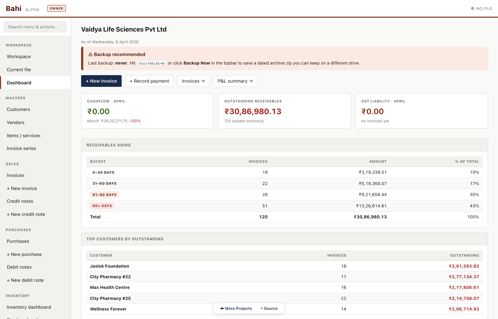
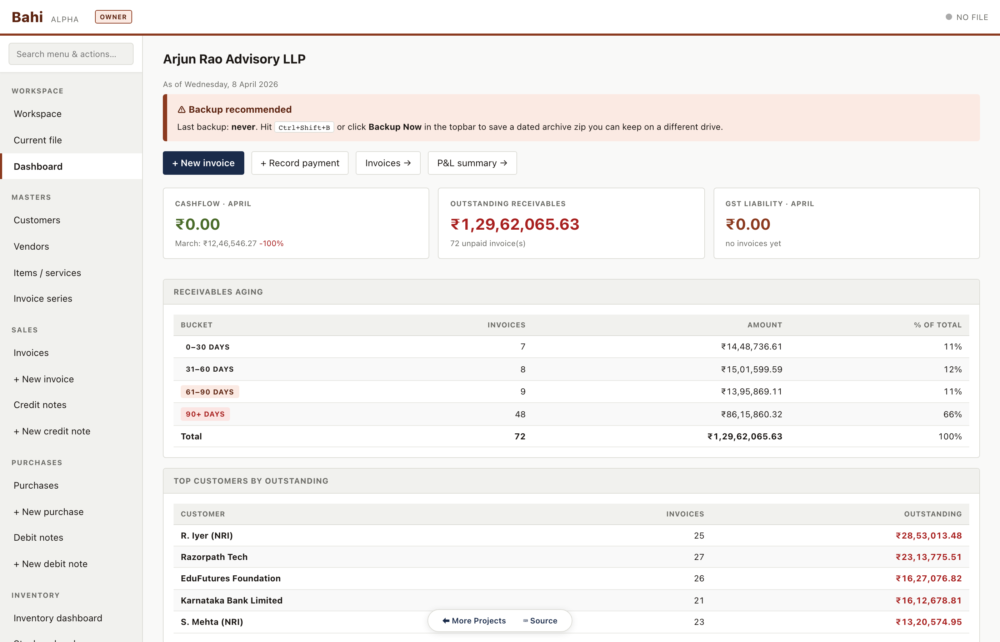

A local-first, browser-native accounting app for Indian SMBs. No cloud, no subscription, no data leaving the device. One .khata file per company.
For the accountant
Daily invoicing, vendor bills with TDS, bank reconciliation, GSTR-1 / 3B / 26Q. Everything a day-to-day bookkeeper needs in one HTML file.
For the chartered accountant
Open one .khata per client. Trial balance, balance sheet, day book review, annotations, and a printable review report — per client, in seconds.

Two modes, one app
Bahi asks who are you? the first time you open it. Your answer flips a single flag in the browser, reshapes the sidebar, and tags every entry you post with the right actor in the audit log. You can switch any time from the topbar badge or with Ctrl+Shift+M. Both modes read and write the same .khata files — nothing is hidden from either side.
OWNER
Owner mode
The day-to-day bookkeeper running a business
Manage one company at a time — the .khata file you have open is yours
Raise invoices, record receipts, enter purchase bills, pay vendors with TDS, reconcile bank
Run GSTR-1, GSTR-3B, CMP-08, Form 26Q / 27EQ / 27D straight out of the ledger
Switching modes: click the OWNER / CA · AB badge in the topbar, or press Ctrl+Shift+M. The first time you pick CA mode, Bahi collects name, firm, and ICAI membership number — stored in IndexedDB on your machine only, never inside any client's .khata file. Your clients get the audit trail, not your profile.
Why local-first
Every Indian accounting tool on the market sends your books to someone else's database. Bahi doesn't. The whole application is one HTML file. Your data is one .khata file. You own both.
One file
Every company is a single .khata zip — manifest.json + books.sqlite. Copy, backup, version-control. Nothing else.
Zero servers
Bahi is a static HTML page. There's no backend to exfiltrate from, nothing to subscribe to, nothing to renew.
Audit-proof
Every entry appends to a signed, hash-linked audit log inside the file itself. Any tampering breaks the chain.
CA-ready
Built-in CA mode, review markers, annotations, and a printable review report. Works across multiple client files without a login.
The three sample files
Three intentionally different shapes — goods+services, goods-only, services-only — to prove the app handles every branch of the chart of accounts. All three pass the 45-assertion data integrity test suite.
Steel products manufacturer. Heavy inventory (500+ stock movements across 2 FYs), WAC valuation, multiple godowns, high-value B2B invoices with e-way bills.

Consulting — Services only
Arjun Rao Advisory LLP
GSTIN29AAEFA9012C1Z7
State Karnataka
Fileconsulting.khata
Professional services LLP. SAC 9982xx only, no inventory, no purchases. Smaller scale — closer to what a single-partner or boutique firm looks like.
Try it yourself — 3 steps
The screenshots below are static. To click through the real app with the real data, grab a sample file from the repo and open it in the live build. No install, no account, no upload.
Download a sample file
Pick whichever shape you want to explore. These are the exact files used throughout this demo — synthetic data, 2 FYs each.
Use Chrome, Edge, Brave, Arc or Opera. Safari and Firefox don't expose the File System Access API that Bahi needs to write back to your disk.
→ Launch Bahi in a new tab. You'll land on the Workspace screen with the first-run welcome.
Click "Open existing .khata"
Pick the file you just downloaded. Bahi will ask permission to read & write the file on your disk — allow it.
Once open, you'll see the dashboard with real receivables aging, top customers, and recent activity. Click anywhere in the sidebar to explore.
Download pharma sample (1.3 MB)Open app ↗Files open read-write in place. Nothing uploads anywhere. If you prefer to keep the sample untouched, copy it first and open the copy.
Starting from blank
The walkthrough above uses a populated sample. If you want to build your own books from scratch — your real company, your real ledger — the path from empty browser to first GST-compliant invoice is six steps and about ten minutes.
Pick a mode
On first open, Bahi asks Are you a business owner or a chartered accountant? Pick Business owner if you're managing one company's books. Pick Chartered accountant if you'll be reviewing multiple client files. You can switch any time later from the topbar badge or with Ctrl+Shift+M.
Create your first .khata file
Workspace → + Create new .khata. Pick a folder on your disk (Documents / Bahi Books / is a sensible default) and a filename. Bahi then opens the new-company wizard. Fill in:
Legal name — your registered business name
Trade name — what you actually call yourself
Company type — proprietorship / partnership / LLP / private limited / etc.
GSTIN (optional) — your 15-digit GST number; Bahi auto-fills the state from the first two digits
State — type the name, ISO code (MH), or the GST state code (27); Bahi auto-fills the others
Address
FY start — defaults to April 1 of the current FY
UI tier — Service SMB or Goods SMB (changeable later in Settings)
Composition scheme — toggle on if you're registered under section 10
Click Create. Bahi writes the file to disk and lands you on the Dashboard.
Add your first customer
Sidebar → Customers → + Add customer. Name (required), GSTIN (optional — auto-fills the state), state, and email / phone / address (all optional). Set an opening balance only if the customer owes you something on day one. Save.
Add an item or service
Sidebar → Items / services → + Add item.
For a service: set Type = Service, fill the name, optional SAC code, unit (HR / NOS / etc.), default rate, and tax rate. Bahi auto-suggests the tax rate from the SAC code if it's in the bundled reference data.
For a goods item: set Type = Goods. Bahi reveals an inventory section — enable inventory tracking, pick valuation method (Weighted Average Cost or FIFO), batch tracking on/off, reorder level, preferred vendor, and opening stock quantity + value. For your first item, leave inventory tracking off; you can enable it later.
Raise your first invoice
Sidebar → + New invoice. The form has three sections:
Header — customer, invoice series (default Domestic), invoice number (auto), date, place of supply (auto-filled from customer state), notes
Lines — pick an item or type a free-text description; quantity, rate, tax rate (default from the item). For cess-bearing goods (aerated drinks, pan masala, tobacco, etc.) there's a Cess (₹) column that auto-suggests the compensation cess from the HSN
Totals — subtotal, CGST/SGST routing (intra-state) vs IGST (inter-state), compensation cess, invoice total in numbers and amount-in-words
Click Post invoice & save. Behind the scenes Bahi:
Inserts the invoice header + lines into the database
Posts the double-entry ledger — Dr Sundry Debtors / Cr Sales / Cr GST Output @ rate%, plus Cr Cess Output if the invoice carries cess
Captures snapshots of the company, customer, and HSN/SAC descriptions at this exact moment, so reprints stay correct even if you rename the customer later
Writes a signed audit log entry
Saves the file to disk
Click PDF on the new invoice row to save a GST-compliant PDF.
Record a payment
Sidebar → + Record payment. Pick the customer, date, amount, bank / cash account (or quick-add a new one), mode (bank transfer / cheque / UPI), reference (UTR / cheque number). Bahi shows the customer's open invoices and lets you allocate FIFO across them with checkboxes. Allocate, then Post payment & save.
You're done. Open the Dashboard to see receivables aging, top customers, GST liability for the month, and the audit log in plain English.
What's next
Sidebar has 60+ routes grouped into 10 sections — explore at your own pace. Hit ? any time for the keyboard cheat sheet.
Backup Now in the topbar (or Ctrl+Shift+B) writes a dated archive zip — do this at the end of every working session and keep one offsite copy.
Settings → Safety & failure modes — read this once. It explains what's protected against (browser crash, multi-machine, file corruption) and what isn't.
Where your data lives
Your .khata file is a zip archive. Unzip it from the command line and you'll find:
manifest.json — metadata, schema version, integrity hashes, audit log head
books.sqlite — the double-entry ledger as a regular SQLite database
snapshots/ — rolling snapshots of previous saves
attachments/ — scanned bills
exports/ — cached report exports
The format is published in khata-format.md. Anyone can write a .khata reader or writer — Bahi is just one implementation.
Accountant walkthrough
Every route the day-to-day accountant touches, captured against the pharma sample. Click any screenshot to open the live Bahi route in this build (load pharma.khata first).
Daily
The work the accountant does every morning. Raise invoices, record receipts, enter purchase bills, pay vendors.
Every invoice with status badge (paid / partial / unpaid / cancelled), customer, date, amount and tax split. Filterable by series, customer, date range, and status.
HSN/SAC items, auto-routed CGST+SGST (intra-state) or IGST (inter-state), place-of-supply captured per invoice, round-off, notes, and live preview of the outgoing ledger entry.
Pay a vendor bill, deduct TDS under the applicable section, and post to TDS Payable in one step. The section header and certificate metadata travel with the deduction.
Unified master for HSN goods and SAC services. Pharma has both: tablet strips, surgical consumables, lab services. Manufacturing has steel products only. Consulting has only SACs.
FY-scoped numbering series (INV/25-26, CN/25-26, PUR/25-26 …). Each .khata file carries its own series and resets them automatically at year-end rollover.
Pick parent invoice, adjust lines, auto-reverses the proportional tax, and produces a balanced journal entry.
Pharma sample#/#/credit-note/new
Debit notes
Purchase returns, symmetric to credit notes. Rare in the sample but the route renders correctly with the empty-state panel for companies that have none.
Capture the advance, its GST treatment (taxable on receipt or on adjustment), and the PAN/GSTIN for statutory reporting.
Pharma sample#/#/advance/new
Monthly
Period close and statutory filings. Dashboard review, aging, GST returns and TDS returns.
Dashboard
KPIs for the current month: cashflow vs last month, total outstanding receivables, GST liability, receivables aging and top customers. This is the first thing the accountant sees every morning.
Pharma sample#/#/dashboard
GSTR-1
Outward supplies summary auto-assembled from the invoice table. B2B, B2CL, B2CS, exports, CDNR, HSN summary — all tabs.
Pharma sample#/#/gstr1
GSTR-3B
Monthly return summary: 3.1 outward, 3.2 inter-state supplies, 4 ITC, 5 exempt, 6.1 payment. Numbers reconcile to the sales and purchase registers.
Pharma sample#/#/gstr3b
Form 26Q
Quarterly TDS return for non-salary deductions. Lists every deduction with section, deductee PAN, amount, rate, date of deduction and date of deposit.
Composition scheme quarterly statement. Renders empty for the sample files since none are composition dealers — but the route is healthy.
Pharma sample#/#/cmp08
Inventory (goods companies)
Every inventory route in sequence. Pharma has the full story — dashboard, stock on hand, register, valuation, batches, aging, godowns, DCs, e-way bills and transfers.
Stock value on hand, count of items below reorder level, count of batches expiring soon, and a top-10 by value strip. Only goods companies see this populated.
Pharma sample#/#/inventory
Stock on hand
Per-item current balance across godowns with WAC (weighted average cost) valuation. Used for monthly closing and the balance-sheet stock figure.
Every in/out movement — sale, purchase, transfer, adjustment, return — with source document reference. This is the source of truth the register is built from.
Batch-tracked stock bucketed by age (0-30 / 31-60 / 61-90 / 90+ days). Pharma's sample data doesn't cross the 0-30 day threshold so the route renders its empty-state panel — a valid result.
GST-compliant sales register: invoice no, customer, GSTIN, taxable value, CGST, SGST, IGST. Used for filing GSTR-1 and also as a standalone printout for CAs.
Symmetric register on the input side. Drives the ITC figures in GSTR-3B Table 4.
Pharma sample#/#/purchase-register
Yearly & governance
Trial balance, financials, period locks and year-end rollover.
Trial balance
Opening + debits + credits + closing for every account grouped by type (asset / liability / income / expense / equity). Grand totals must tie — enforced by a data-integrity test.
Pharma sample#/#/trial-balance
Balance sheet
Schedule-III compliant balance sheet assembled from the trial balance in-browser. No cloud, no spreadsheet.
Sticky notes the CA leaves on specific entries, customers or accounts. Visible in-line and in the annotations register.
Pharma sample#/#/annotations
Manufacturing highlights
High-value B2B invoices, heavy stock movement, WAC valuation. Goods-only workflow — no SACs, no credit notes in the sample.
Dashboard
KPIs for the current month: cashflow vs last month, total outstanding receivables, GST liability, receivables aging and top customers. This is the first thing the accountant sees every morning.
Every invoice with status badge (paid / partial / unpaid / cancelled), customer, date, amount and tax split. Filterable by series, customer, date range, and status.
Vendor bills with input GST captured separately. Consulting has zero purchases — proof that the sample data is shape-correct.
Manufacturing sample#/#/purchases
Inventory
Manufacturing sample#/#/inventory
Stock on hand
Per-item current balance across godowns with WAC (weighted average cost) valuation. Used for monthly closing and the balance-sheet stock figure.
Manufacturing sample#/#/stock-on-hand
Stock movement log
Every in/out movement — sale, purchase, transfer, adjustment, return — with source document reference. This is the source of truth the register is built from.
Manufacturing sample#/#/stock-movements
Valuation summary
Stock value by godown and by item class. Ties directly to the inventory line on the balance sheet.
Manufacturing sample#/#/valuation-summary
Stock aging (batch)
Batch-tracked stock bucketed by age (0-30 / 31-60 / 61-90 / 90+ days). Pharma's sample data doesn't cross the 0-30 day threshold so the route renders its empty-state panel — a valid result.
Manufacturing sample#/#/stock-aging
Stock register (per item)
Walk-through of a single item's movements with running balance and running WAC. Auditor workflow: pick an item, verify opening + movements = closing.
Manufacturing sample#/#/stock-register
Delivery challans
DCs for goods dispatched without an immediate invoice (job-work, consignment, returnable).
Manufacturing sample#/#/delivery-challans
E-way bills
E-way bill register for invoices crossing the INR 50k / inter-state threshold. Each row links back to its parent invoice.
Manufacturing sample#/#/eway-bills
Stock transfers
Inter-godown transfer register — one side of the 'out' matches the other side's 'in'.
Manufacturing sample#/#/stock-transfers
Godown master
Named storage locations — factory, warehouse-1, consignment — with per-location stock roll-ups.
Manufacturing sample#/#/godowns
Trial balance
Opening + debits + credits + closing for every account grouped by type (asset / liability / income / expense / equity). Grand totals must tie — enforced by a data-integrity test.
Manufacturing sample#/#/trial-balance
Balance sheet
Schedule-III compliant balance sheet assembled from the trial balance in-browser. No cloud, no spreadsheet.
Manufacturing sample#/#/balance-sheet
Profit & loss
P&L summary with income categories, direct expenses, and indirect expenses. Drilldown to account ledger from each line.
Manufacturing sample#/#/pnl
GSTR-1
Outward supplies summary auto-assembled from the invoice table. B2B, B2CL, B2CS, exports, CDNR, HSN summary — all tabs.
Manufacturing sample#/#/gstr1
GSTR-3B
Monthly return summary: 3.1 outward, 3.2 inter-state supplies, 4 ITC, 5 exempt, 6.1 payment. Numbers reconcile to the sales and purchase registers.
Manufacturing sample#/#/gstr3b
Consulting highlights
Services-only LLP. No inventory, no purchases, simpler dashboard. Proof that Bahi's layout scales down as well as up.
Dashboard
KPIs for the current month: cashflow vs last month, total outstanding receivables, GST liability, receivables aging and top customers. This is the first thing the accountant sees every morning.
Consulting sample#/#/dashboard
Sales invoices
Every invoice with status badge (paid / partial / unpaid / cancelled), customer, date, amount and tax split. Filterable by series, customer, date range, and status.
Consulting sample#/#/invoices
Customer master
Complete customer ledger with GSTIN, state, payment terms, current outstanding and aging. Clicking a row drills through to their invoice history.
Consulting sample#/#/customers
Items & services
Unified master for HSN goods and SAC services. Pharma has both: tablet strips, surgical consumables, lab services. Manufacturing has steel products only. Consulting has only SACs.
Consulting sample#/#/items
Credit notes
Sales returns with a back-link to the original invoice. Pharma has 4-5 credit notes in the sample against expired stock returns.
Consulting sample#/#/credit-notes
Receipts & payments list
All customer receipts and vendor payments in one register. Clicking a row shows the allocation breakdown and the underlying ledger entry.
Consulting sample#/#/payments
Advances
Customer advances received before an invoice exists. Tracked separately and auto-adjusted against the first matching invoice.
Consulting sample#/#/advances
Journal voucher
Free-form double-entry voucher for anything the dedicated forms don't cover — depreciation, provisions, expense accruals, CA adjustments.
Consulting sample#/#/journal/new
Day book
Chronological voucher tape — every entry in date order with narration, ref and running totals. The auditor's first scan of the period.
Consulting sample#/#/day-book
Trial balance
Opening + debits + credits + closing for every account grouped by type (asset / liability / income / expense / equity). Grand totals must tie — enforced by a data-integrity test.
Consulting sample#/#/trial-balance
Balance sheet
Schedule-III compliant balance sheet assembled from the trial balance in-browser. No cloud, no spreadsheet.
Consulting sample#/#/balance-sheet
Profit & loss
P&L summary with income categories, direct expenses, and indirect expenses. Drilldown to account ledger from each line.
Consulting sample#/#/pnl
Sales register
GST-compliant sales register: invoice no, customer, GSTIN, taxable value, CGST, SGST, IGST. Used for filing GSTR-1 and also as a standalone printout for CAs.
Consulting sample#/#/sales-register
GSTR-1
Outward supplies summary auto-assembled from the invoice table. B2B, B2CL, B2CS, exports, CDNR, HSN summary — all tabs.
Consulting sample#/#/gstr1
GSTR-3B
Monthly return summary: 3.1 outward, 3.2 inter-state supplies, 4 ITC, 5 exempt, 6.1 payment. Numbers reconcile to the sales and purchase registers.
Consulting sample#/#/gstr3b
Form 26Q
Quarterly TDS return for non-salary deductions. Lists every deduction with section, deductee PAN, amount, rate, date of deduction and date of deposit.
Consulting sample#/#/form-26q
CA audit walkthrough
One CA profile, three client files, one review workflow. The CA opens each .khata in sequence, runs trial balance / balance sheet / P&L, uses the review panel to annotate and sign off, and exports a printable report — all without leaving the browser.
How CA mode works
The screenshot tour below shows what review looks like in practice. This subsection covers the layer underneath it — how CA mode behaves, what your CA profile is, how to add a client, and what happens if the owner edits in parallel.
The problem CA mode solves
Without CA mode, the typical handoff is messy: the owner sends a .khata to the CA via email / WhatsApp / Drive, the CA opens it pretending to be the owner, makes adjustments (year-end, depreciation, prepaid, outstanding, accruals), sends it back, and the owner has no visible record of what changed.
With CA mode, Bahi tags every action the CA takes with actor='ca' in the audit log automatically, stamps the CA's name + firm + ICAI membership on each entry, lets the CA mark entries reviewed and attach annotations, generates a formal PDF Review Report with the CA firm letterhead, and — when the owner reopens the file — surfaces exactly what was added, the review report, the annotations, and any to-dos to react to.
One-time setup
Click the OWNER badge in the topbar (or use Ctrl+Shift+M) and confirm the switch. The first time you enter CA mode, Bahi shows the CA profile setup modal:
Your name
Firm name
ICAI membership number
Logo (optional, ≤200 KB) — appears on review reports
This profile is stored in your browser's IndexedDB, never inside any client .khata file. It's per-machine, so if you work from two laptops you set it up on each. Edit later via Settings → Edit CA profile.
Adding a client
Workspace → + Add client → pick the client's .khata. Bahi validates the format and adds it to your Client list. Each card shows client name + GSTIN, last-reviewed date, unreviewed entries count, and last-opened.
Every time you open a client file, Bahi runs the Layer 3 ancestry check against the previous open's audit log head. Five outcomes:
Identical — same audit head as last open → silent, proceed
Fast-forward — incoming file is downstream (owner posted new entries since you last had it) → silent, proceed
Same GSTIN, no shared ancestry — file shares no history with your last copy → warning toast (probable cause: fresh export, restore from old backup, or different file with the same GSTIN)
Divergent — both you and the owner have new entries the other doesn't → routes to the Reconciliation View (see below)
Different GSTIN — hard block; you've opened the wrong file
Annotation types
Click + Note on any review row, or use Sidebar → CA → Annotations. Six types:
Comment — generic note
To-do — something you'll come back to
Flag — needs attention but no specific action
Reclassified — you posted an adjustment to move an entry; this annotation explains why
Missing bill — supporting document is missing; ask the client
Confirm with client — needs the client's input before finalising
Each annotation captures your CA identity (name + firm + ICAI membership) at creation time as a snapshot. If your firm renames itself later, last year's annotations still show last year's firm name — same invariant as invoice, customer, and vendor snapshots.
Adjustment voucher types
Sidebar → CA → + Adjustment voucher (or F7 for a journal voucher). The form is a thin wrapper around the journal-voucher engine with one extra field — Adjustment type:
Year-end — closing entries that aren't full FY rollover
Depreciation — fixed-asset depreciation
Prepaid — prepaid expenses → reclassify as expense
Outstanding — outstanding expenses → reclassify as liability
Accrual — revenue / expense accrual
Other — anything else
Posted via the same postEntry engine as native journal vouchers, but with actor='ca' and a dedicated ca.adjustment audit log action. The owner sees this entry tagged as a CA adjustment with your name, firm, and the adjustment type.
Sending the file back
Two options:
File system (simplest) — save the file (any save action does this; or hit Ctrl+S), send the .khata via your normal channel, tell the client to open it in Bahi.
Backup zip with the review report bundled (cleaner handoff) — hit Backup Now (or Ctrl+Shift+B). Bahi writes a dated .khata-backup.zip containing the file + audit log CSV + meta.json. Add the PDF review report to the same zip manually. Send the zip.
Either way, the owner's next file open triggers the Layer 3 ancestry check on their side. Your audit log head is downstream of theirs → fast-forward, proceed silently. They see the new audit log entries clearly attributed to you.
Reconciliation — when the owner edited in parallel
If the owner posted new entries while you were reviewing — the "we both made changes" scenario — Bahi detects it on the owner's next file open. Their workspace's last-known head doesn't match the head of the file you sent back, AND their audit chain has entries you don't have, AND your audit chain has entries they don't have.
Bahi opens the Reconciliation View automatically for them:
Header banner with the common ancestor hash, both branch heads, and per-side counts of unique entries
Side-by-side checkbox lists — local branch (owner) on the left, imported branch (you) on the right, default = keep all from both sides
Pre-merge summary of how many entries will come from each branch
The owner unchecks anything they don't want, then Build merged file. Bahi runs the replay engine — takes the local DB as the base, walks the picked imported entries in chronological order, and re-executes them via the existing posting bridges. The merged manifest carries integrity.parentHashes = [localHead, importedHead] so the file knows its lineage from both branches, and the audit log gets a merge.commit entry. Nothing is silently lost; both branches' work is preserved; the owner is in control of the merge decisions.
What CA mode is, and isn't
It is:
A way to attribute every action to either the owner or a specific CA via the audit log's actor field
A way to attach notes to ledger entries that survive handoff
A way to generate a formal PDF review report with your firm letterhead in one click
A way to safely round-trip a .khata file between owner and CA without silent overwrites
It is not:
Real-time collaboration — Bahi is local-first; multi-CA workflows on the same file are not supported (the same problem as multi-machine concurrent editing)
A way to lock the owner out — they can still post entries in parallel; the Reconciliation View exists to handle that
A way to delete or hide owner entries — the audit log is append-only; your adjustments are additive
A multi-firm workspace — each browser stores one CA profile. If you work for two firms with different membership numbers, use a separate browser profile (Chrome / Brave / Arc profile) for each
Client 1 — Pharma (Vaidya Life Sciences)
CA opens pharma.khata. Mode badge turns into the CA tile. Review workflow begins.
Client 1 — Dashboard
CA opens pharma.khata. Mode badge flips to 'CA · CS'. Dashboard greets them with the client's outstanding receivables and aging.
CA audit walkthrough#/#/dashboard
Client 1 — Trial balance
First scan of completeness — grand totals tied, every entry balanced, suspense account empty.
CA audit walkthrough#/#/trial-balance
Client 1 — Balance sheet
Schedule-III grouping. Reconciles directly to the trial balance so there's no 'spreadsheet step' to audit.
CA audit walkthrough#/#/balance-sheet
Client 1 — Profit & loss
P&L summary. Drilldown is one click — from any line to the underlying ledger.
CA audit walkthrough#/#/pnl
Client 1 — Day book review
Chronological voucher tape. The auditor clicks through suspicious entries and drops annotations as they go.
CA audit walkthrough#/#/day-book
Client 1 — CA review panel
Every voucher gets a 'Reviewed' checkbox and an inline 'Note' button. The header counts tell the CA how much is left to sign off.
CA audit walkthrough#/#/ca/review
Client 1 — Annotations
Running list of all notes the CA left on this file. Export to the review report with one click.
CA audit walkthrough#/#/annotations
Client 1 — Review report
Final PDF-ready report combining client identity, review checkpoints, annotations and sign-off.
CA audit walkthrough#/#/ca/report
Client 2 — Manufacturing (Shree Krishna Steel)
Close client 1, open client 2. Same keystrokes, different client.
Client 2 — Dashboard
CA closes pharma.khata, opens manufacturing.khata. The mode badge persists, the dashboard refreshes to the new client.
CA audit walkthrough#/#/dashboard
Client 2 — Trial balance
Manufacturing's trial balance. Same layout, different numbers — no context switching cost.
CA audit walkthrough#/#/trial-balance
Client 2 — Balance sheet
Heavy on fixed assets and inventory, as you'd expect for a steel products company.
CA audit walkthrough#/#/balance-sheet
Client 2 — Profit & loss
High cost of goods sold relative to sales — consistent with the manufacturing margin profile.
CA audit walkthrough#/#/pnl
Client 2 — CA review panel
Same review workflow applied to the second client. Nothing to install or configure between files.
CA audit walkthrough#/#/ca/review
Client 3 — Consulting (Arjun Rao Advisory)
Close client 2, open client 3. Services-only balance sheet, and a CA adjustment voucher example.
Client 3 — Dashboard
Consulting LLP — smaller scale, services only, no inventory panel.
CA audit walkthrough#/#/dashboard
Client 3 — Trial balance
Fewer accounts, simpler structure — typical for a services LLP.
CA audit walkthrough#/#/trial-balance
Client 3 — Balance sheet
Receivables-heavy, no inventory line. The balance sheet layout adapts to the data present.
CA audit walkthrough#/#/balance-sheet
Client 3 — Profit & loss
Services revenue and professional expenses. TDS under 194J is auto-accumulated from the vendor payments.
CA audit walkthrough#/#/pnl
Client 3 — CA adjustment voucher
CA-authored adjustment entry — depreciation provision, year-end expense accrual, or any reclassification. Signed with the CA's identity from the profile.
CA audit walkthrough#/#/ca/adjustment/new
Migrating from Tally
Bahi has a built-in Tally XML importer that handles both Tally Prime and Tally ERP 9. A typical migration takes about 30 minutes for a year of bookkeeping. The importer is an orchestrator over Bahi's existing posting engine — every imported voucher goes through the same posting functions as native entries, so imported records are forensically indistinguishable from natively-posted ones.
What gets imported, what doesn't
Imported
Masters (groups, ledgers, stock items, units, godowns) plus vouchers — Sales / Purchase / Receipt / Payment / Journal / Contra / Credit Note / Debit Note and variants.
Ignored
Cost-centre allocations (warned), Stock Journal manual adjustments, Memorandum, Reversing Journal, Sales Order, Purchase Order, Payroll — none are part of standard double-entry books.
Multi-currency
Taken at face value from the INR column. Non-INR vouchers get flagged in the result for you to review.
Gateway of Tally → Export → All Masters, format XML → save to a known folder.
Gateway of Tally → Export → Day Book, format XML, set the date range (or full year) → save to the same folder.
Tally ERP 9
Open your company in Tally ERP 9.
Gateway of Tally → Display → List of Accounts → Alt+E (Export), pick XML, save.
Gateway of Tally → Display → Day Book → Alt+E (Export), pick XML, set the period, save.
Either path produces two XML files. You can combine them into one (most CAs do) or import them sequentially — Bahi handles both.
Step 2 — Run the wizard
In Bahi: Workspace → Import from Tally… → pick your Tally XML. Bahi parses the file (usually under 2 seconds for an SMB year) and routes you to a 6-step wizard.
File summary
Source company name + GSTIN (from the Tally <COMPANY> element), detected format (Prime / ERP 9), counts of groups / ledgers / stock items / godowns / vouchers, the voucher date range, and a voucher-type breakdown with supported / unsupported flags. If unsupported is under ~5% of total you're fine — otherwise look at the breakdown and consider fixing in Tally first.
Date range filter
Defaults to the full file range. The picker has a live count that updates as you change the dates. Common scenarios: first migration (import everything), year-by-year (import current FY first, then the previous), period-end (import only since the last close).
Mapping review
Tally and Bahi both use a chart-of-accounts hierarchy, but Tally has 28 reserved groups plus whatever customs you've created. Bahi auto-maps the reserved groups; your custom groups go into a Needs mapping panel that hard-blocks Continue until every row is resolved. Common picks:
Custom expense group ("Marketing", "Office") → Indirect Expenses
Custom income group → Sales
Custom liability group → Current Liabilities
Custom asset group → Current Assets
Auto-mapped groups sit in a collapsible section above. Click any row to override if Bahi got it wrong.
Commit target
Two options:
Create new .khata file — fresh file with the Tally company info pre-populated. Safer; recommended for first-time imports.
Merge into currently-open file — adds the Tally data to the file you have open. Customers and vendors are deduped by GSTIN (or name if no GSTIN). Voucher-number collisions get a TALLY- prefix so you can see which records came from import.
For merge mode, Bahi shows a live preview of how many customers will be matched vs created (and the same for vendors).
Dry-run preview
Final counts before committing: customers, vendors, items, godowns, supported vouchers in range, unsupported vouchers that will be skipped. Verify the date range and the commit target. Click Commit import.
Result
Bahi runs the import in a single SQL transaction (any failure rolls back cleanly) and shows: created / matched counts per category, the auto-cleaned-to-services list (stock items that looked service-shaped — zero opening stock, no HSN code, name contains "service" / "consulting" / "advice" / "fee" — were imported as services with inventory disabled), the cost-centre warning, the multi-currency warning, skipped vouchers with reasons, and the unsupported voucher types with counts.
Click Download import report to save a JSON file with the full result for your records. Keep it alongside the original Tally export as the audit trail of the migration.
Step 3 — Verify the import
Don't skip this. Migration mistakes are easier to catch on day one than six months later.
Trial Balance (Sidebar → Reports → Trial Balance) — verify total debits and credits tie. A mismatch usually means a few vouchers were skipped — cross-check the count against the import report.
Customer + vendor totals — pick three of each at random and verify the outstanding balances match what Tally showed.
Stock on hand (Sidebar → Inventory → Stock on hand) — for goods items, verify the opening + post-import quantities are right.
Sales register for the most recent month — invoice count should match Tally.
GSTR-3B summary (Sidebar → Compliance → GSTR-3B) for the current period — total CGST/SGST/IGST should match the Tally summary.
Once you're confident
Hit Backup Now (Ctrl+Shift+B) to save a dated .khata-backup.zip. Keep one copy offsite.
Decide your handoff date with Tally — usually the start of a new month or new financial year.
From that date forward, post directly into Bahi. Don't dual-post into both Tally and Bahi — keeping two systems in sync by hand is the same problem as multi-machine concurrent editing, and it doesn't work.
After 30 days of clean Bahi posting, retire the Tally license (or keep it read-only for historical reference).
Common gotchas
Customer-not-found skips on sales vouchers
Usually means the customer ledger sat under a custom group you didn't map to Sundry Debtors in Step 5. Fix the mapping and re-import.
Tax amounts don't match
Check if the original Tally vouchers used inclusive vs exclusive tax handling. Bahi assumes exclusive (line subtotal + GST = total). Inclusive-tax vouchers may need a manual journal voucher to correct.
Stock valuation off by a few rupees
Rounding. Tally uses different rounding rules than Bahi. Material only if your stock has many low-value items.
Period overlap with existing Bahi entries
If you've already posted in Bahi for the same period the Tally import covers, you'll see a yellow banner in Step 4 (merge mode only). Importing anyway will duplicate ledger entries — narrow the import date range or roll back the Bahi entries first.
If something goes wrong
The import is wrapped in a single SQL transaction. If anything fails mid-import, the database rolls back to its pre-import state and a tally.import.failed entry appears in the audit log with the error message.
If the import succeeded but the result looks wrong: open Settings → Snapshots — Bahi captured a snapshot just before the import. Restore it to a fresh .khata file and start over with different mapping decisions. If you used merge-into-existing, restore the snapshot to undo the merge. If you used create-new, just delete the new file and re-create from the original Tally XML.
What the Tally importer is, and isn't
It is:
A one-way migration tool (Tally → Bahi)
An orchestrator over Bahi's existing posting engine — imported records are forensically and behaviorally indistinguishable from natively-posted ones
It is not:
A bidirectional sync tool — going Bahi → Tally is a separate (and much lower-value) feature
A reader for Tally .tcp backup files (proprietary binary, not handled)
A reader for encrypted Tally Cloud / TallyVault files (same)
An IRN / e-invoicing data preserver — Tally Prime exports include IRN data, but Bahi has no IRN field yet
Capture summary
Every screenshot on this page is generated by capture.py — a Playwright script that drives a local Bahi dev server, loads each sample file via Bahi's in-page globals, navigates to each route, and records a 1400×900 PNG. The script doubles as a regression test: any route that fails to render or throws a console error is flagged in CAPTURE-LOG.md.